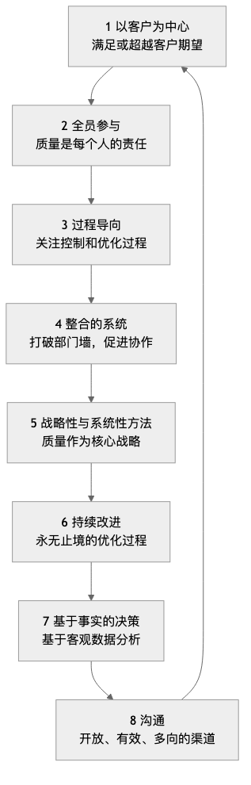

全面质量管理¶
在传统的生产模式中，“质量”通常被视为生产线末端一个独立的检验环节，由专门的质检部门负责。然而，这种“事后补救”的方式成本高昂且效率低下。全面质量管理（Total Quality Management, TQM） 对此提出了一种革命性的、截然不同的管理哲学。它主张，质量是全员的责任，必须渗透到组织运营的每一个角落、每一个环节，并且其最终评判标准是客户的满意度。
TQM并非一套具体的方法或工具，而是一种以质量为中心、全员参与、持续改进的组织文化和管理理念。它旨在通过建立一套系统性的、预防性的质量保障体系，来不断提升产品、服务和流程的质量，从而在激烈的市场竞争中获得可持续的竞争优势。它强调，高质量不仅不会增加成本，反而会因为减少了浪费、返工和客户投诉，从而显著地降低总成本，提升盈利能力。
TQM的核心原则¶
全面质量管理建立在一系列相互关联的核心原则之上，这些原则共同构成了TQM的文化基石。
-
以客户为中心（Customer-Focused）：TQM的起点和终点都是客户。组织的生存和发展，最终取决于其满足甚至超越客户期望的能力。因此，从产品设计到售后服务的每一个环节，都必须以客户的需求和满意度为导向。
-
全员参与（Total Employee Involvement）：质量不是某个部门的专利，而是从CEO到一线员工每一个人的责任。TQM强调通过赋能、培训和激励，让所有员工都积极主动地参与到质量改进的活动中来。
-
过程导向（流程-Centered）：TQM认为，最终产品或服务的质量，是由产生它的过程所决定的。因此，管理的焦点应该从“检验结果”转向“控制和优化过程”。
-
整合的系统（Integrated System）：组织被视为一个由各种横向和纵向流程构成的复杂系统。TQM追求打破部门墙，促进跨职能的协作，确保整个组织的各个部分都能协调一致地为共同的质量目标服务。
-
战略性与系统性方法（Strategic and Systematic Approach）：质量必须被视为组织的核心战略之一。组织需要制定一个清晰的、长期的质量愿景，并将其系统性地融入到所有的计划和决策中。
-
持续改进（Continual Improvement）：TQM追求的不是“一次性达标”，而是一个永无止境的、螺旋式上升的改进过程。它鼓励组织不断地寻找机会，对产品、服务和流程进行微小但持续的优化（即“改善”，Kaizen）。
-
基于事实的决策（Fact-Based Decision Making）：所有的决策和改进，都必须基于对客观数据的收集和分析，而不是凭直觉或经验。这需要组织建立起有效的数据测量和分析系统。
-
沟通（Communications）：在组织内部，必须建立起开放、有效、多向的沟通渠道，以确保战略、目标、流程和反馈能够被及时地传递和理解。

如何实施TQM¶
实施TQM是一个长期的、文化层面的变革过程，通常可以遵循PDCA循环的逻辑。
-
第一阶段：计划（Plan） - 奠定基础
- 高层承诺：获得最高管理层坚定不移的支持和承诺，这是TQM成功的首要前提。
- 建立质量委员会：成立一个跨职能的领导小组，负责规划和指导整个TQM的实施。
- 制定质量愿景与战略：明确组织的质量方针和长期目标。
- 全员培训：对所有员工进行TQM基本理念和工具的培训。
-
第二阶段：执行（Do） - 全面展开
- 识别客户需求：系统性地收集和分析客户的需求与期望。
- 流程分析与标准化：绘制和分析核心的业务流程，识别瓶颈和浪费，并建立标准化的操作程序。
- 组建质量改进小组：鼓励员工（特别是跨部门的）自发组建“质量圈（Quality Circles）”等小组，针对具体问题进行改进。
- 赋能员工：授予一线员工在发现问题时，有权停止生产线或流程的权力和责任。
-
第三阶段：检查（Check） - 测量与评估
- 数据收集与分析：运用统计过程控制（SPC）、帕累托图、鱼骨图等质量工具，对流程和结果进行持续的监控和测量。
- 绩效评估：定期评估TQM实施的进展和效果，并与预设的目标进行比较。
-
第四阶段：行动（Act） - 改进与制度化
- 根本原因分析：对发现的质量问题，进行深入的根本原因分析。
- 实施改进措施：根据分析结果，采取纠正和预防措施。
- 分享与固化：将成功的改进经验进行分享，并将其固化为新的标准流程，纳入到组织知识库中。
- 持续循环：完成一轮改进后，立即开始下一轮的PDCA循环。
应用案例¶
案例一：丰田汽车（Toyota）
- 场景：丰田生产系统（TPS）被认为是TQM最成功、最彻底的实践范例。
- 应用：
- 全员参与：“安灯（Andon）系统”允许任何一名产线工人在发现质量问题时，拉绳停止整条生产线，这体现了对一线员工的高度信任和赋能。
- 持续改进：丰田的“改善（Kaizen）”文化鼓励所有员工，每天都对自己的工作流程提出微小的改进建议。
- 过程导向：“准时化生产（Just-in-Time, JIT）”和“自働化（Jidoka）”等核心原则，都旨在通过优化流程来消除浪费、保证质量。
案例二：丽思卡尔顿酒店（The Ritz-Carlton）
- 场景：作为顶级奢华酒店品牌，其卓越的服务质量是核心竞争力。
- 应用：
- 以客户为中心：其著名的信条是“我们是为绅士和淑女服务的绅士和淑女”。
- 全员参与与赋能：公司授权每一位员工，在不需请示上级的情况下，可以自行决定使用最高2000美元的资金，来解决任何一个客户遇到的问题。这确保了客户问题能被第一时间、创造性地解决。
- 基于事实的决策：酒店通过细致的客户偏好数据库，记录每一位常客的个性化需求，以提供精准、超预期的服务。
案例三：一家软件开发公司
- 场景：该公司希望提升其软件产品的代码质量和交付速度。
- 应用：
- 过程导向：他们引入了“持续集成/持续部署（CI/CD）”的流程，通过自动化的测试来保证每次代码提交的质量。
- 全员参与：推行“代码审查（Code Review）”制度，要求所有代码都必须经过至少一位同事的审查才能合并，将质量责任分散到每一位开发者。
- 持续改进：定期举行“技术债偿还日”和“事后复盘会”，鼓励团队主动发现和解决流程中的问题。
TQM的优势与挑战¶
核心优势
- 提升客户满意度与忠诚度：将整个组织都聚焦于满足客户需求。
- 降低成本，提升效率：通过“第一次就把事情做对”，显著减少了返工、浪费和客户投诉所带来的成本。
- 增强员工的归属感与责任感：赋能员工，让他们感受到自己是组织成功的重要一环。
- 建立可持续的竞争优势：高质量本身就是一种难以被模仿的强大竞争优势。
潜在挑战
- 需要长期的文化变革：TQM不是一个可以快速见效的“项目”，而是一场深刻的、自上而下的组织文化变革，需要数年时间才能真正落地生根。
- 高层承诺的持续性：如果最高管理层的支持出现动摇，TQM的实施将很快流于形式。
- 可能产生官僚主义：如果过度强调流程和文档，可能会产生新的官僚作风，扼杀灵活性和创新。
延伸与关联¶
- 六西格玛（Six Sigma）：可以被视为TQM中“基于事实的决策”和“持续改进”原则的一种更具体、更数据驱动、更项目化的实施方法论。TQM提供了哲学和文化，六西格玛提供了统计工具和项目路线图。
- 精益运营（Lean Operations）：与TQM在消除浪费、关注流程、持续改进等方面有着共同的哲学基础。两者常常被结合在一起，形成“精益六西格玛”。
- ISO 9000质量管理体系：是TQM理念的一套国际标准化、可认证的框架。一个组织可以通过获得ISO 9001认证，来证明其建立了一套符合TQM原则的质量管理体系。
来源参考：全面质量管理的思想源泉可以追溯到20世纪中叶的几位质量管理大师，包括威廉·爱德华兹·戴明（W. Edwards Deming）的“14个管理要点”，约瑟夫·朱兰（Joseph M. Juran）的“质量三部曲”，以及菲利普·克劳士比（Philip B. Crosby）的“质量是免费的”等理念。这些思想在日本战后重建中被发扬光大，并最终形成了TQM的完整体系。